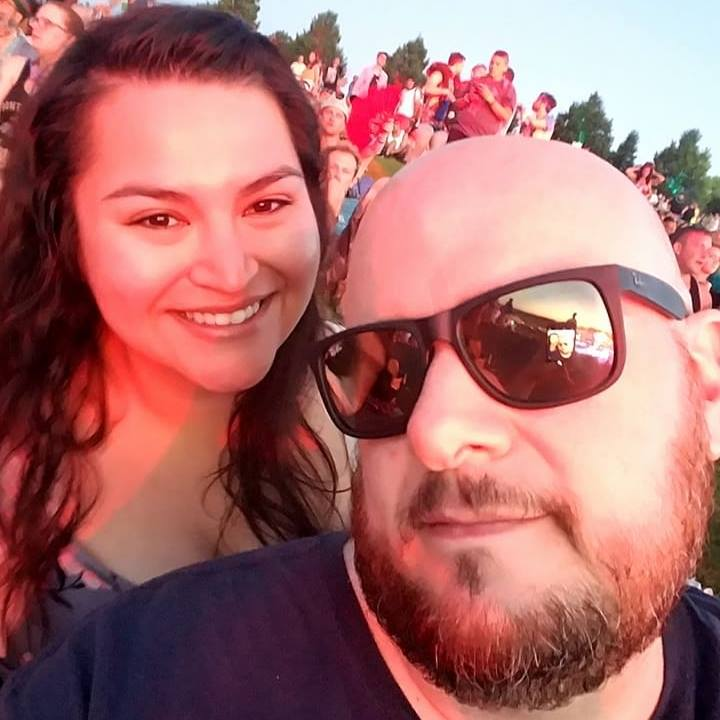

About Me
I spent much of my early career working for Wizards of the Coast and a few small gaming retailers. This gave me the opportunity to travel the world exhibiting at some of the biggest game convention and tournaments in the world.
I'm currently participating in the University of Washington Full Stack Coding Bootcamp. This camp teaches all phases of the mern method of web devolpment. I've worked on projects ranging from this profile page, to making my own word game, and other projects.
Find me at these locations on the web:
Linkedin
GitHub
Email me or give me a call at 206.484.3194
Check out my resume here
I'm looking forward to finding a position that utiltizes my new skils and challenges me to keep growing by learning new languages and coding methods.